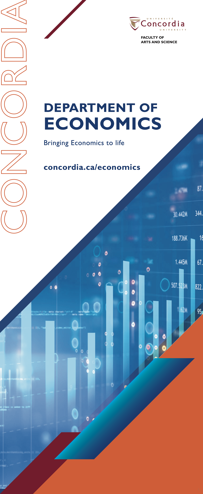

Department of Economics Banner
Translating Data into Visual Impact
Project Brief
As part of Concordia University's centralized Communications department, design a 33" x 79" retractable pull-up banner for the Department of Economics to attract prospective students at recruitment events, open houses, and academic fairs. The challenge: make economic data visually compelling while maintaining academic credibility, institutional brand standards, and departmental identity through collaborative stakeholder engagement.
Context & Research
The Department of Economics is housed in Concordia's Hall Building—the historic heart of the Sir George Williams Campus. Understanding this institutional context was crucial. The banner needed to reflect both the analytical rigor of economics and the energy of Concordia's downtown Montreal location.
Working within Concordia's centralized Communications department provided access to a comprehensive photography repository—professionally shot campus imagery catalogued and maintained for consistent brand expression. This resource allowed me to research the physical and cultural context of the Economics department before beginning design exploration.

Hall Building, home to the Department of Economics at Concordia's Sir George Williams Campus (from Concordia Communications photo repository)
Visual Direction: Data as Design Language
Economics is fundamentally about understanding patterns, trends, and systems through data. Rather than defaulting to traditional academic aesthetics (serif fonts, muted colors, static layouts), I approached this banner as a data visualization challenge: How do we make economic analysis feel dynamic, contemporary, and accessible?
I researched contemporary data visualization aesthetics—the language of modern analytics dashboards, financial terminals, and data science interfaces. This visual vocabulary feels both rigorous and forward-looking, appealing to digitally-native students who expect information to be visually sophisticated.
Visual research: contemporary data visualization using vibrant cyan/blue palette, layered graphics, and dynamic composition
Color Strategy
The color palette draws directly from modern data visualization conventions:
Concordia Orange (Pantone 1585) — Maintains institutional brand recognition through the vertical "CONCORDIA" wordmark, ensuring the banner is immediately identifiable as official university material
Concordia Blue (Pantone 2758) — Anchors the "DEPARTMENT OF ECONOMICS" messaging with academic authority and trustworthiness
Cyan & Bright Blue — The data visualization layer uses vibrant cyan and electric blue—colors associated with digital dashboards, financial analytics, and modern tech interfaces. This palette makes economics feel current and tech-forward rather than dusty and theoretical
Burgundy/Maroon (Pantone 209) — Strategic accents through diagonal geometric elements add depth and create visual momentum in the vertical format
This color strategy bridges Concordia's institutional identity with the contemporary visual language of data science and economics.
Design Development: First Iteration
The banner's vertical format (33" x 79") presented both challenges and opportunities. The design needed to work at two scales: eye-catching from across a crowded exhibition hall, and information-rich when viewed up close.
For the first iteration, I developed a layered composition that treated economic content as visual texture:
• Left side: "CONCORDIA" runs vertically in bold orange, creating a strong branded spine
• Center: "DEPARTMENT OF ECONOMICS" plus tagline establishes hierarchy
• Right side: Data visualization layer—bar charts, trend lines, economic indicators—rendered in cyan creates a dynamic backdrop that suggests analytical depth without being literal
Diagonal geometric accents in burgundy cut across the composition, adding movement and preventing the vertical layout from feeling static.

First iteration: exploring vertical hierarchy, color blocking, and initial data visualization concepts
Collaborative Refinement Process
Working within Concordia's centralized Communications department meant access to valuable resources and institutional knowledge. The department maintains a comprehensive photography repository—professional images of campus life, facilities, and academic contexts—which informed the visual direction.
After presenting the first iteration, I collaborated with the Lead Creative who served as the liaison between our design team and the Department of Economics. This collaborative structure was crucial: the Lead Creative understood both the university's visual standards and the specific needs of the Economics faculty.
Through this feedback loop, several refinements emerged:
• Data visualization specificity: Economics faculty wanted the charts to feel more authentic to economic analysis—supply/demand curves, market indicators, trend analysis—rather than generic business graphics
• Tagline development: "Bringing Economics to life" was refined to better capture the department's teaching philosophy
• Color balance: Adjustments to the cyan/burgundy relationship to ensure the banner felt dynamic but not overwhelming
• Typography hierarchy: Fine-tuning type sizes to optimize readability at different viewing distances
This iterative process—designer → Lead Creative → Economics department → refinement—ensured the final banner satisfied both institutional brand standards and departmental identity.
Typography & Hierarchy
Typography needed to balance academic professionalism with contemporary accessibility. I selected clean, geometric sans-serif faces for all type—ensuring maximum legibility at various viewing distances while maintaining a modern, approachable tone.
The type hierarchy follows clear reading order: CONCORDIA (brand recognition) → DEPARTMENT OF ECONOMICS (program identification) → tagline (value proposition) → URL (call-to-action).

Final iteration: refined data visualization, optimized hierarchy, and approved messaging after department collaboration
Final Solution
The final iteration, developed through collaborative feedback with the Lead Creative and Economics department, positions economics as a discipline that's both analytically rigorous and visually sophisticated. By borrowing the visual language of data science and financial analytics—fields that economics students often pursue—the design speaks directly to prospective students' career aspirations.
The cyan data visualization layer does critical conceptual work: it makes abstract economic theory feel concrete and visual. Charts and graphs aren't decorative—they signal that economics is about interpreting patterns, modeling systems, and making data-driven decisions.
The diagonal burgundy elements add kinetic energy, preventing the composition from feeling too corporate or rigid. This gesture acknowledges that economics isn't just spreadsheets—it's about dynamic systems, shifting markets, and real-world complexity.
The banner deployed at recruitment events, demonstrating visibility and impact
Design Outcomes
Visual Impact: The orange vertical "CONCORDIA" creates immediate brand recognition from across crowded event spaces, while the cyan data visualization draws viewers closer to explore the content.
Audience Connection: By using the visual vocabulary of tech and data science, the banner appeals to digitally-native students who expect information to be presented through sophisticated data visualization.
Brand Consistency: Maintains Concordia's institutional identity (orange and blue) while expressing the specific character of the Economics department through contemporary data aesthetics.
Functional Flexibility: The URL (concordia.ca/economics) provides a clear next step, connecting physical recruitment touchpoints to digital information resources.
Technical Specifications
The banner was designed at 33" x 79" (standard retractable pull-up format) with proper bleed and safe zones to ensure critical information remains visible when installed in the retractable base. Files were prepared in CMYK color mode for large-format printing, with all Concordia brand colors matched to official Pantone specifications:
• Concordia Orange: Pantone 1585
• Concordia Blue: Pantone 2758
• Accent Burgundy: Pantone 209
• Data Visualization Cyan: Custom formulation
Reflection
This project taught me that effective academic design isn't about making things look "serious" or "traditional"—it's about finding visual languages that resonate with contemporary audiences while respecting institutional context.
Economics could have been represented through dusty textbooks and chalkboard equations. Instead, by treating data visualization as a legitimate aesthetic language, the banner positions the program as forward-thinking, relevant, and visually sophisticated—qualities that matter to students considering their academic future.
Working within Concordia's centralized communications structure revealed how institutional design operates at scale. The Lead Creative's role as liaison between design and departmental stakeholders ensured feedback was filtered through someone who understood both visual strategy and organizational constraints. This collaborative workflow—with access to shared photography repositories and standardized brand resources—is how large institutions maintain visual coherence across dozens of departments.
The iterative process from first concept to final approved banner reinforced that design isn't about perfecting a single vision—it's about synthesizing stakeholder feedback, institutional requirements, and strategic objectives into a solution that serves multiple audiences simultaneously.